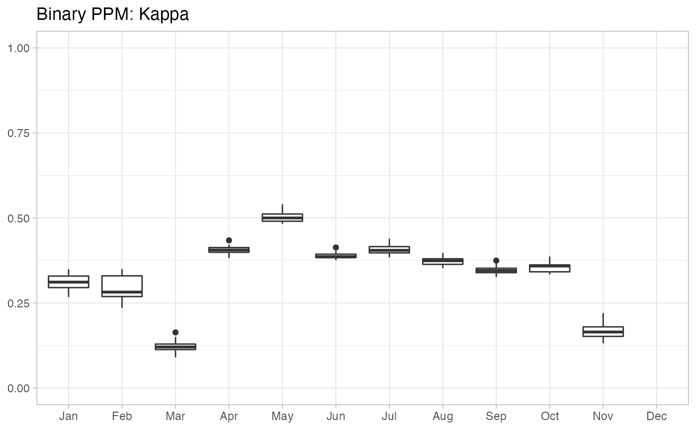
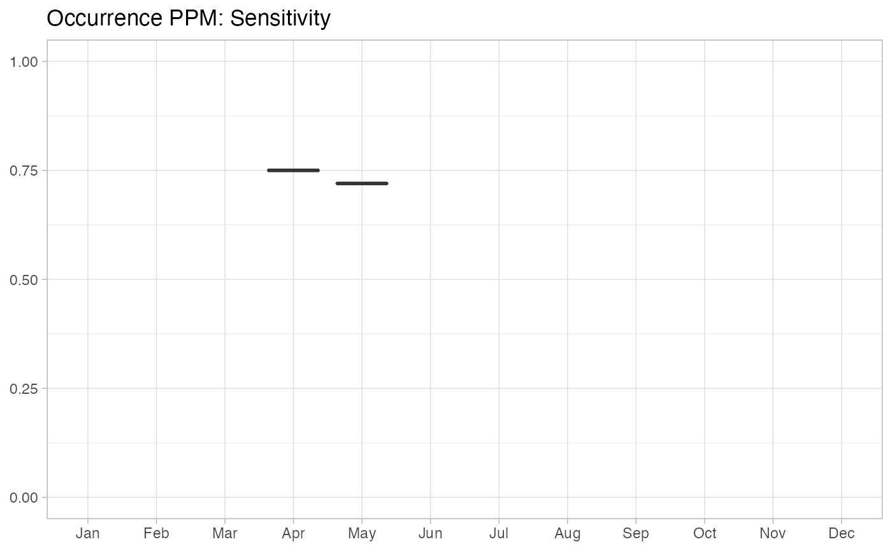
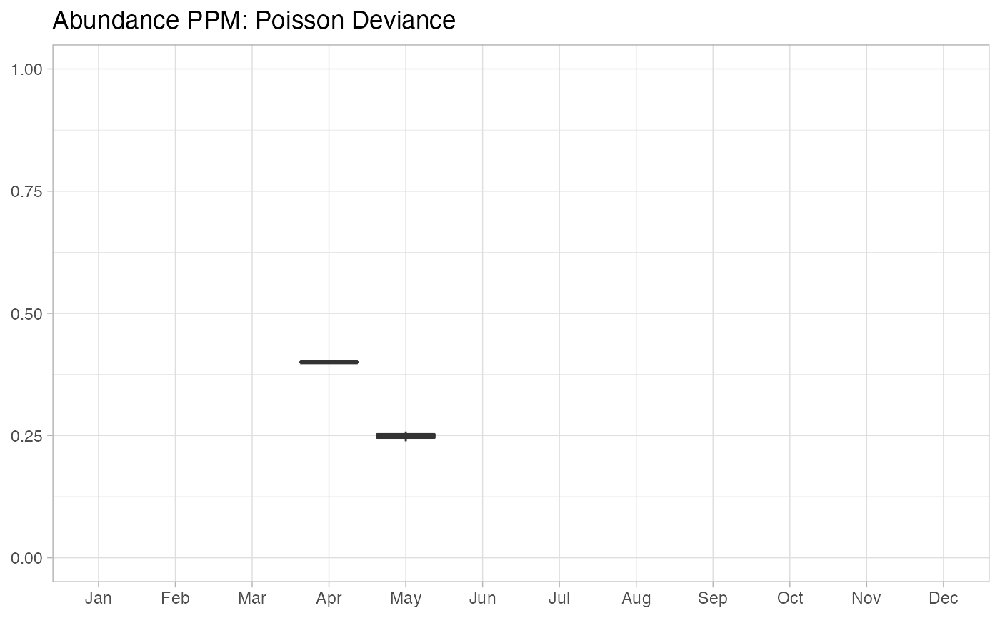

R/ebirdst-ppms.R
ebirdst_ppms_ts.RdCalculate a time series of predictive performance metrics (PPMs) for the eBird Status and Trends model. For each week or month of the year, PPMs will be summarized independently to produce a time series. For further details on eBird Status and Trends PPMs consult the help for ebirdst_ppms.
ebirdst_ppms_ts(path, ext, summarize_by = c("weeks", "months"), ...) # S3 method for ebirdst_ppms_ts plot(x, type = c("binary", "occurrence", "abundance"), metric = "kappa", ...)
| path | character; directory that the Status and Trends data for a given
species was downloaded to. This path is returned by |
|---|---|
| ext | ebirdst_extent object (optional); the spatial extent over which to calculate the PPMs. Note that ebirdst_extent objects typically specify both a spatial and temporal extent, however, within this function only the spatial component of the extent is used. |
| summarize_by | character; periods over which to summarize PPMs. PPMs can either be calculated for eBird Status and Trends weeks (as defined in ebirdst_weeks) or for the months of the year. |
| ... | ignored. |
| x | ebirdst_ppms_ts object; PPMs summarized by weeks or months as
calculated by |
| type | character; the PPM type to plot, either a binary, occurrence, or abundance PPM can be plotted. |
| metric | character; the specific metric to plot, the list list of possible metrics varies by PPM type:
|
An ebirdst_pppms_ts object containing a list of three data frames:
binary_ppms, occ_ppms, and abd_ppms. Each row of these data frames
corresponds to the PPMs from one Monte Carlo iteration for a given time
period. Columns correspond to the different PPMS. binary_ppms contains
binary or range-based PPMS, occ_ppms contains within-range occurrence
probability PPMs, and abd_ppms contains within-range abundance PPMs. In
some cases, PPMs may be missing, either because there isn't a large enough
test set within the spatiotemporal extent or because average occurrence or
abundance is too low. In these cases, try increasing the size of the
ebirdst_extent object. plot() can be called on the returned
ebirdst_pppms_ts object to plot a time series of a single PPM.
# \donttest{ # download example data path <- ebirdst_download("example_data", tifs_only = FALSE) #> Data already exists, use force = TRUE to re-download. # or get the path if you already have the data downloaded path <- get_species_path("example_data") # define a spatial extent to calculate ppms over e <- ebirdst_extent(c(xmin = -86, xmax = -83, ymin = 42.5, ymax = 44.5)) # compute predictive performance metrics, summarized by months ppms <- ebirdst_ppms_ts(path = path, ext = e, summarize_by = "months") # plot time series # binary, kappa plot(ppms, type = "binary", metric = "kappa")  # occurrence, sensitivity plot(ppms, type = "occurrence", metric = "sensitivity")  #' # abundance, poisson deviance plot(ppms, type = "abundance", metric = "poisson_dev_abd")  # }